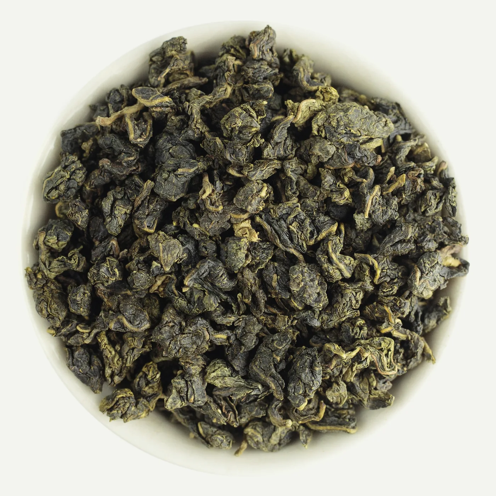
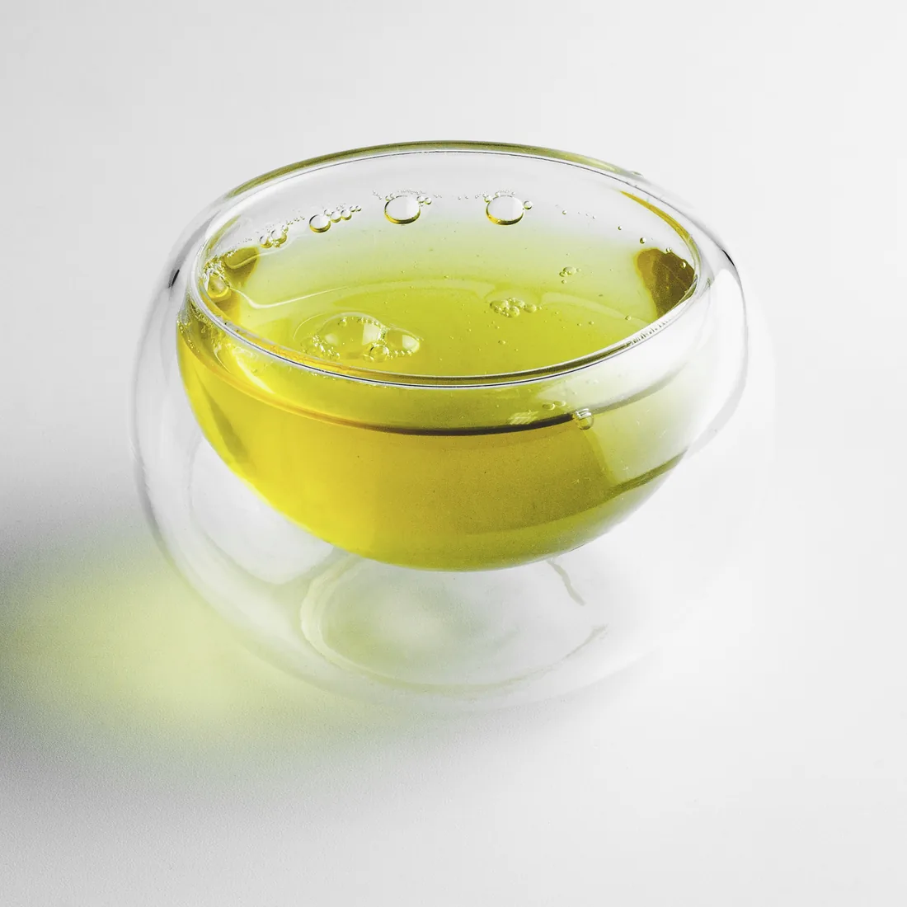
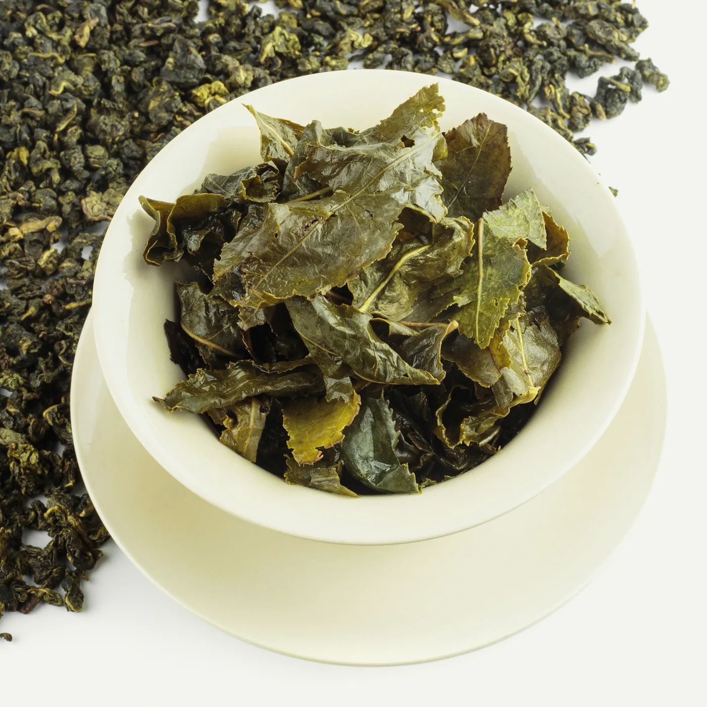
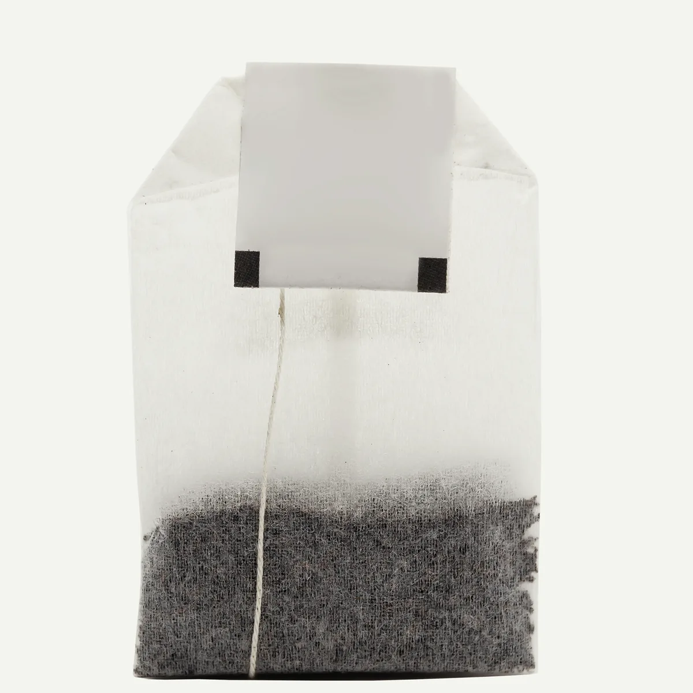
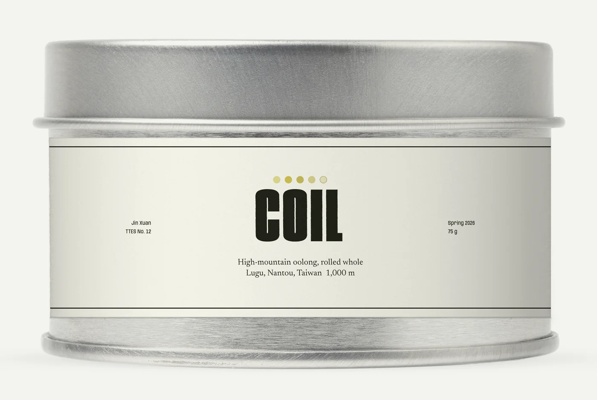
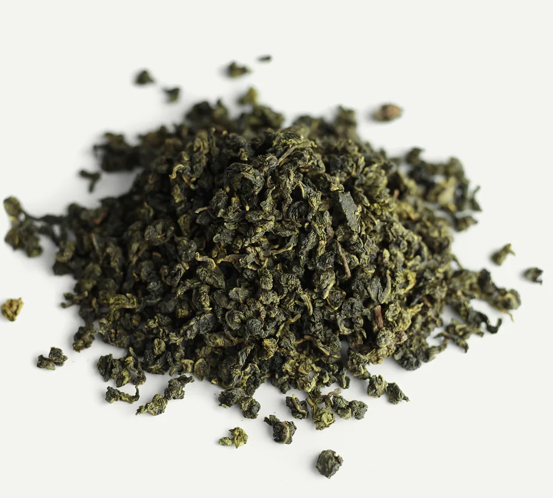

Rolled tight, to open five times.
COIL is one oolong from one garden, about 1,000 metres up in Lugu, Nantou County, Taiwan. Every leaf is rolled whole into a pellet about the size of a peppercorn. Put 5 g in hot water and it begins to open. Pour again, and it opens further. By the fifth steep it is a leaf again.
Buy a tin, $42 Start with the first steep
5 steeps from 5 g of leaf and 300 ml of water at 95 °C.

Steep 1 of 5
4:00 at 95 °C
Cream on the nose, then orchid. A thin, bright cup.
The leaf Still mostly rolled. The edges have let go.
The first cup tastes of where it grew.
The garden is in Lugu Township, about 1,000 metres up. Most afternoons, fog climbs the valley and settles on the rows. In the cool the bushes grow slowly, and the leaf comes in thick.
They are Jin Xuan bushes, a cultivar bred in Taiwan in 1981. It tastes faintly of cream on its own. Nothing is added to it.
- County
- Nantou, Taiwan
- Township
- Lugu
- Altitude
- About 1,000 m
- Cultivar
- Jin Xuan (TTES No. 12)
- Picked
- Spring 2026, late April
- Oxidised
- Lightly, about 20%
- Roasted
- Not at all
Steep 2 of 5
3:00 at 95 °C
The fullest cup. Butter, sugarcane, warm rice.
The leaf Half open. You can see where the stem is.

The second steep is shorter.
After the first pour the leaf is soft and half open, so it gives its flavour up faster. Three minutes is enough.
It was rolled to hold that much. After picking, the leaf is wilted in the sun, tossed so its edges bruise, and heated to stop it browning. Then it is wrapped in cloth, pressed and rolled, shaken loose and rolled again, up to twenty times over two days. Each round winds it tighter. None of it is cut.
Steep 3 of 5
3:30 at 95 °C
Sweeter. The cream fades and something like pear comes in.
The leaf Open. Two leaves and a bud, still on one stem.
Now look at the leaf.


Tip the leaf out onto a white plate after the last steep. It is the leaf as it grew: whole, joined at the stem, big enough to lay flat. That is why it lasts five steeps. It had somewhere to open to.
Most teabags hold leaf that was cut small on purpose, so it gives everything up at once. There is no shape left in it to open. One steep, and it is done.
Steep 4 of 5
4:30 at 95 °C
Mineral, a little salt. The cup thins out.
The leaf Flat and soft. It still has colour to give.

75 grams, 75 cups.
A session takes 5 g and gives 5 steeps, so one tin is 15 sessions and 75 cups. At $42 a tin, that is $0.56 a cup.
- In the tin
- 75 g of whole rolled leaf
- Harvest
- Spring 2026
- The tin
- Brushed steel, slip lid, keeps out light
- Keeps
- A year sealed. Use it within two months of opening.
- Ships
- From Singapore, within two working days
$42 or $37.80 every 6 weeks
Steep 5 of 5
6:00 at 95 °C
Pale and sweet, close to water. The cream comes back at the very end.
The leaf Whole. Lay it flat and look.
The fifth is nearly water, and still sweet.
You need
- 5 g of leaf, about a heaped tablespoon
- A pot or jug that holds 300 ml
- Water at 95 °C, about thirty seconds off the boil
- A strainer, or a pot with one built in

Pour, wait, pour off
- 4:00The leaf starts to open. Give it the full time.
- 3:00Shorter. The leaf is open now and gives faster.
- 3:30From here, a little longer each time.
- 4:30The cup thins. That is the leaf, not you.
- 6:00Stop here, or try a sixth at eight minutes.
Pour off every drop between steeps, and leave the lid off while you drink, or the leaf keeps cooking. Steep it again the same day; overnight it goes flat.
Buy a tin.
One size, one tea. 75 g, Spring 2026 harvest, shipped from Singapore. Postage is $4, and free from 2 tins or on a subscription.